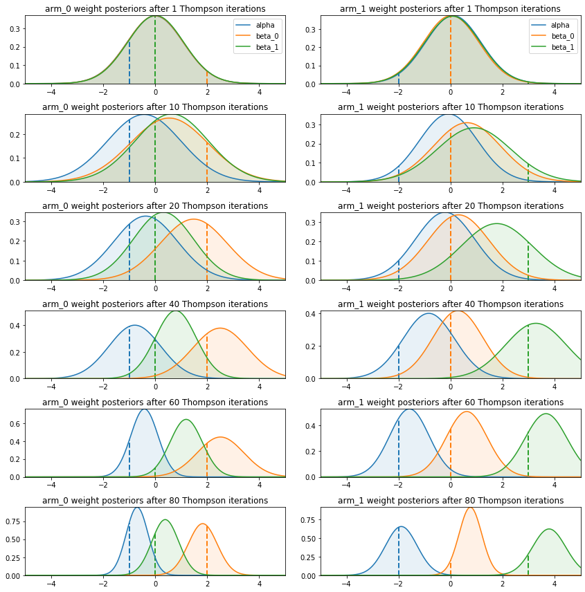
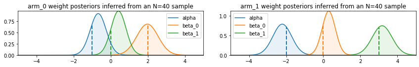

An introduction to Thompson sampling and how to implement it with probabilistic machine learning to tackle contextual bandits.
contextual bandits
reinforcement learning
bayesian modeling
variational inference
probabilistic machine learning
tensorflow-probability
Author
Yves Barmaz
Published
February 9, 2021
The multi-armed bandit problem is inspired by the situation of gamblers facing \(N\) slot machines with a limited amount of resources to “invest” in them, without knowing the probability distribution of rewards from each machine. By playing with a machine, they can of course sample its distribution. Once they find a machine that performs well enough, the question is wheter they should try the other ones that might perform even better, at the risk of wasting money because they might be worse. This is an example of the exploration-exploitation tradeoff dilemma. Applications include clinical trial design, portfolio selection, and A/B testing.
Thompson sampling is an approximate solution applicable to bandits for which we have a Bayesian model of the reward \(r\), namely a likelihood \(P(r\vert \theta, a)\) that depends on the action \(a\) (the choice of an arm to pull) and a vector of parameters \(\theta\), and a prior distribution \(P(\theta)\). In certain cases, called contextual bandits, the likelihood also depends on a set of features \(x\) observed by the players before they choose an action, \(P(r\vert \theta, a, x)\). After each round, the posterior distribution \(P(\theta \vert \left\lbrace r_i, a_i, x_i\right\rbrace_{i})\) is updated with the newly observed data. Then a \(\theta^\ast\) is sampled from it, the new context \(x\) is observed, and the new action is chosen to maximize the expected reward, \(a^\ast = \mathrm{argmax}_a \ \mathbb{E}(r\vert \theta, a, x)\).
This approach solves the exploration-exploitation dilemma with the random sampling of \(\theta^\ast\), which gives to every action a chance to be selected, yet favors the most promising ones. The more data is collected, the more informative the posterior distribution will become and the more it will favor its top performer.
Both discuss the case of a binary reward (success and failure) for every action \(a\) that follows a Bernoulli distribution with unknown probability of success \(p_a\). They assume a beta prior for each of the \(p_a\), which is the conjugate prior for the Bernoulli likelihood and makes inference of the posterior straightforward. This is particularly appealing when you have to update your posterior after each play.
If there are covariates that can explain the probability of success, one of the simplest models for a binary response of the potential actions is the combination of generalized linear models for each action,
Unfortunately, there is no immediate congugate prior for this type of likelihood, so we have to rely on numerical methods to estimate the posterior distribution. A previous blog post discussed variational inference as a speedier alternative to MCMC algorithms, and we will see here how we can apply it to the problem of contextual bandits with binary response.
This problem is relevant in the development of personalized therapies, where the actions represent the different treatments under investigation and the contexts \(x\) are predictive biomarkers of their response. The goal of a trial would be to estimate the response to each treatment option given biomarkers \(x\), and, based on that, to define the best treatment policy. Adaptive randomization through Thompson sampling ensures that more subjects enrolled in the trial get the optimal treatment based on their biomarkers and the knowledge accrued until their randomization, which is certainly more ethical than a randomization independent on the biomarkers.
Another example is online ad serving, where the binary response corresponds to a successful conversion, the action is the selection of an ad for a specific user, and the context is a set of features related to that user. When a new ad enters the portfolio and a new click-through rate model needs to be deployed for it, Thompson sampling can accelerate the training phase and reduce the related costs.
Bandit model
For simplicity, we simulate bandits whose true probabilities of success follow logistic models, so we can see how the posterior distributions concentrate around the true values during training. You can run this notebook in Colab to experiment with more realistic models, and vary the number of arms or the context dimension.
Code
class ContextualBandit(object):""" This class represents contextual bandit machines with n_arms arms and linear logits of p-dimensional contexts. parameters: arm_true_weights: (n_arms, p) Numpy array of real weights. arm_true_biases: (n_arms,) Numpy array of real biases methods: pull( arms, X ): returns the results, 0 or 1, of pulling the arms[i]-th bandit given an input context X[i]. arms is an (n,) array of arms indices selected by the player and X an (n, p) array of contexts observed by the player before making a choice. get_logits(X): returns the logits of all bandit arms for every context in the (n, p) array X get_probs(X): returns sigmoid(get_logits(X)) get_selected_logits(arms, X): returns from get_logits(X) only the logits corresponding to the selected arms get_selected_probs(arms, X): returns sigmoid(get_selected_logits(arms, X)) get_optimal_arm(X): returns the arm with the highest probability of success for every context in X """def__init__(self, arm_true_weights, arm_true_biases):self._arm_true_weights = tf.convert_to_tensor( arm_true_weights, dtype=tf.float32, name='arm_true_weights')self._arm_true_biases = tf.convert_to_tensor( arm_true_biases, dtype=tf.float32, name='arm_true_biases')self._shape = np.array(self._arm_true_weights.shape.as_list(), dtype=np.int32)self._dtype = tf.convert_to_tensor( arm_true_weights, dtype=tf.float32).dtype.base_dtype@propertydef dtype(self):returnself._dtype@propertydef shape(self):returnself._shapedef get_logits(self, X):return tf.matmul(X, self._arm_true_weights, transpose_b=True) +\self._arm_true_biasesdef get_probs(self, X):return tf.math.sigmoid(self.get_logits(X))def get_selected_logits(self, arms, X): all_logits =self.get_logits(X) column_indices = tf.convert_to_tensor(arms, dtype=tf.int64) row_indices = tf.range(X.shape[0], dtype=tf.int64) full_indices = tf.stack([row_indices, column_indices], axis=1) selected_logits = tf.gather_nd(all_logits, full_indices)return selected_logitsdef get_selected_probs(self, arms, X):return tf.math.sigmoid(self.get_selected_logits(arms, X))def pull(self, arms, X): selected_logits =self.get_selected_logits(arms, X)return tfd.Bernoulli(logits=selected_logits).sample()def pull_all_arms(self, X): logits =self.get_logits(X)return tfd.Bernoulli(logits=logits).sample()def get_optimal_arm(self, X):return tf.argmax(self.get_logits(X), axis=-1)
Here we work with a two-dimensional context drawn from two independent standard normal distributions, and we select true weights and biases that correspond to an overall probability of success of about 30% for each arm, a situation that might be encountered in a personalized medicine question.
A Thompson sampler based on a logistic regression can be implemented as a generalization of the probabilistic machine learning model discussed in the previous post. It is essentially a single dense variational layer with one unit per arm of the contextual bandit we want to solve. These units are fed into a Bernoulli distribution layer that simulates the pull of each arm.
The parameters \(\theta\) of the model are encoded in the posterior_mean_field used as a variational family for the dense variational layer, and when we fit the full model to data, it converges to an approximation of the true posterior \(P(\theta \vert \left\lbrace r_i, a_i, x_i\right\rbrace_{i})\).
A subsequent call of that dense variational layer on a new input \(x\) will return random logits drawn from the approximate posterior predictive distribution and can thus be used to implement Thompson sampling (see the randomize method in the code). The \(a^\ast = \mathrm{argmax}_a \ \mathbb{E}(r\vert \theta, a, x)\) step is the selection of the unit with the highest logit.
For training, the loss function is the negative log-likelihood of the observed outcome \(r_i\), but only for the unit corresponding to the selected action \(a_i\), so it is convenient to combine them into a unique output \(y_i=(a_i,r_i)\) and write a custom loss function.
Code
class ThompsonLogistic(tf.keras.Model):""" This class represents a Thompson sampler for a Bayesian logistic regression model. It is essentially a keras Model of a single layer Bayesian neural network with Bernoulli output enriched with a Thompson randomization method that calls only the dense variational layer. Parameters: - context_dim: dimension of the context - n_arms: number of arms of the multi-arm bandit under investigation - sample_size: size of the current training set of outcome observations, used to scale the kl_weight of the dense variational layer Methods: - randomize(inputs): returns a logit for each arm drawn from the (approximate) posterior predictive distribution - get_weights_stats(): returns means and sttdevs of the surrogate posterior of the model parameters - predict_probs(X, sample_size): returns the posterior probability of success for each context in the array X and each arm of the bandit, sample_size specifies the sample size of the Monte Carlo estimate - assign_best_mc(X, sample_size): returns the arms with the highest predict_probs(X, sample_size) - assign_best(X): returns the arms with the highest expected logit, should be very similar to assign_best_mc, a little bit less accurate """def__init__(self, context_dim, n_arms, sample_size):super().__init__()self.context_dim = context_dimself.n_arms = n_armsself.densevar = tfp.layers.DenseVariational(n_arms, posterior_mean_field, prior_ridge, kl_weight=1/sample_size)self.bernoullihead = tfp.layers.DistributionLambda(lambda t: tfd.Bernoulli(logits=t))def call(self, inputs): x =self.densevar(inputs)returnself.bernoullihead(x)def randomize(self, inputs):returnself.densevar(inputs)def get_weights_stats(self): n_params =self.n_arms * (self.context_dim +1) c = np.log(np.expm1(1.)) weights =self.densevar.weights[0] means = weights[:n_params].numpy().reshape(self.context_dim +1, self.n_arms) stddevs = (1e-5+ tf.nn.softplus(c + weights[n_params:])).numpy().reshape(self.context_dim +1, self.n_arms) mean_weights = means[:-1] mean_biases = means[-1] std_weights = stddevs[:-1] std_biases = stddevs[-1]return mean_weights, mean_biases, std_weights, std_biasesdef assign_best(self, X): mean_weights, mean_biases, std_weights, std_biases =self.get_weights_stats() logits = tf.matmul(X, mean_weights) + mean_biasesreturn tf.argmax(logits, axis=1)def predict_probs(self, X, sample_size=100): mean_weights, mean_biases, std_weights, std_biases =self.get_weights_stats() weights = tfd.Normal(loc=mean_weights, scale=std_weights).sample(sample_size) biases = tfd.Normal(loc=mean_biases, scale=std_biases).sample(sample_size) probs = tf.math.sigmoid(tf.matmul(X, weights)+biases[:,tf.newaxis,:])return tf.reduce_mean(probs, axis=0)def assign_best_mc(self, X, sample_size=100): probs =self.predict_probs(X, sample_size)return tf.argmax(probs, axis=1)# Specify the surrogate posterior over `keras.layers.Dense` `kernel` and `bias`.def posterior_mean_field(kernel_size, bias_size=0, dtype=None): n = kernel_size + bias_size c = np.log(np.expm1(1.))return tf.keras.Sequential([ tfp.layers.VariableLayer(2* n, initializer=tfp.layers.BlockwiseInitializer(['zeros', tf.keras.initializers.Constant(np.log(np.expm1(.7))), ], sizes=[n, n]), dtype=dtype), tfp.layers.DistributionLambda(lambda t: tfd.Independent( tfd.Normal(loc=t[..., :n], scale=1e-5+ tf.nn.softplus(c + t[..., n:])), reinterpreted_batch_ndims=1)), ])# Specify the prior over `keras.layers.Dense` `kernel` and `bias`.def prior_ridge(kernel_size, bias_size, dtype=None):returnlambda _: tfd.Independent( tfd.Normal(loc=tf.zeros(kernel_size + bias_size), scale=tf.concat([2*tf.ones(kernel_size),4*tf.ones(bias_size)], axis=0)), reinterpreted_batch_ndims=1 )def build_model(context_dim, n_arms, sample_size, learning_rate=0.01): model = ThompsonLogistic(context_dim, n_arms, sample_size)# the loss function is the negloglik of the outcome y[:,1] and the head corresponding# to the arm assignment y[:,0] is selected with a one-hot mask loss_fn =lambda y, rv_y: tf.reduce_sum(-rv_y.log_prob(y[:,1, tf.newaxis]) * tf.one_hot(y[:,0], n_arms), axis=-1) model.compile(optimizer=tf.optimizers.Adam(learning_rate=learning_rate), loss=loss_fn) model.build(input_shape=(None, context_dim))return model
Learning strategy
In the learning phase of the model, at each step a new context \(x_i\) is observed (or drawn from the population), an action \(a_i\) is chosen, a reward \(r_i\) is observed (or simulated with bandit.pull), and the model is updated.
Code
class BayesianStrategy(object):""" Implements an online, learning strategy to solve the contextual multi-armed bandit problem. parameters: bandit: an instance of the ContextualBandit class methods: thompson_randomize(X): draws logits from the posterior distribution and returns the arms with the highest values _update_step(X, y): updates the model with the new observations one_trial(n, population): samples n elements from population, selects an arm for each of them through Thompson sampling, pulls it, updates the model train_on_data(X_train, all_outcomes_train): implements Thompson sampling on pre-sampled data where an omnicient being has pulled all the arms. The reason is to compare with standard Bayesian inference on the same data evaluate_training_decisions: returns statistics about action selection during training """def__init__(self, bandit):self.bandit = banditself.context_dim = bandit.shape[1]self.n_arms = bandit.shape[0] dtype = tf.float32self.X = tf.cast(tf.reshape((), (0, self.context_dim)), tf.float32)self.y = tf.cast(tf.reshape((), (0, 2)), tf.int32)self.model = build_model(self.context_dim, self.n_arms, 1, learning_rate=0.008)self.loss = []self.weights = []def thompson_randomize(self, X):return tf.argmax(self.model.randomize(X), axis=1)def _update_step(self, X, y, epochs=10):self.X = tf.concat([self.X, X], axis=0)self.y = tf.concat([self.y, y], axis=0) weights =self.model.get_weights()self.model = build_model(self.context_dim, self.n_arms, self.X.shape[0], learning_rate=0.008)self.model.set_weights(weights) hist =self.model.fit(self.X, self.y, verbose=False, epochs=epochs)self.loss.append(hist.history['loss'])self.weights.append(self.model.get_weights_stats())def one_trial(self, n, population, epochs=10): X = population.sample(n) selected_arms =self.thompson_randomize(X) outcomes =self.bandit.pull(selected_arms, X) y = tf.concat([tf.cast(selected_arms[:,tf.newaxis], tf.int32), outcomes[:,tf.newaxis]], axis=1)self._update_step(X, y, epochs)def train_on_data_step(self, X, all_outcomes, epochs): selected_arms =self.thompson_randomize(X) column_indices = tf.convert_to_tensor(selected_arms, dtype=tf.int64) row_indices = tf.range(X.shape[0], dtype=tf.int64) full_indices = tf.stack([row_indices, column_indices], axis=1) outcomes = tf.gather_nd(all_outcomes, full_indices) y = tf.concat([tf.cast(selected_arms[:,tf.newaxis], tf.int32), outcomes[:,tf.newaxis]], axis=1)self._update_step(X, y, epochs)def train_on_data(self, X_train, all_outcomes_train, batch_size=1, epochs=10): n_train = X_train.shape[0] ds = tf.data.Dataset.from_tensor_slices((X_train, all_outcomes_train)).batch(batch_size)for (X, all_outcomes) in ds:self.train_on_data_step(X, all_outcomes, epochs)def train_on_data_standard(self, X_train, all_outcomes_train, epochs=1000): n_train = X_train.shape[0] n_zeros = n_train//2 n_ones = n_train - n_zeros selected_arms = tf.cast(tf.math.floormod(tf.range(n_train), 2), tf.int64) column_indices = tf.convert_to_tensor(selected_arms, dtype=tf.int64) row_indices = tf.range(n_train, dtype=tf.int64) full_indices = tf.stack([row_indices, column_indices], axis=1) outcomes_train = tf.gather_nd(all_outcomes_train, full_indices) y_train = tf.concat([tf.cast(selected_arms[:,tf.newaxis], tf.int32), outcomes_train[:,tf.newaxis]], axis=1)self._update_step(X_train, y_train, epochs)def evaluate_training_decisions(self): best_arm_proportion = tf.reduce_mean(tf.cast( tf.cast(self.y[:,0], tf.int64)==self.bandit.get_optimal_arm(self.X), tf.float32)).numpy() success_rate =self.y[:,1].numpy().sum()/self.y.shape[0] prob_of_success = tf.reduce_mean(self.bandit.get_selected_probs(tf.cast(self.y[:,0], tf.int64), self.X), axis=0).numpy()return {'training_best_arm_proportion': best_arm_proportion,'training_success_rate': success_rate,'training_prob_of_success': prob_of_success }
After 60 to 80 iterations, the surrogate posteriors seem to have converged to distributions that are compatible with the true values of the parameters.

For comparison, we can train models on the same sample that has been assigned purely randomly to each arm.

The surrogate posterior distributions look similar to the ones obtained from Thompson sampling, and the predictive performance on a test set are comparable. In the following table, “best_arm_selection_rate” describes how frequently the best action is selected for contexts in the test set according to the predictions of the two models, and “model_prob_of_success” is the average of the true probabilities of success for the actions selected by the model. For reference, “arms_probs_of_success” shows the average of the true probabilities of success for each action in the case it is always picked. The benefit of Thompson sampling is revealed in the predictive performance during training. In the same table, “training_best_arm_proportion” indicates how often the best action is selected during training (as expected, roughly half the time for standard randomization), “training_success_rate” the observed success rate during training and “training_prob_of_success” the average probability of success following the assignment decisions made during training.
Thompson randomization
Standard randomization
training_best_arm_proportion
0.775
0.5875
training_success_rate
0.4375
0.375
training_prob_of_success
0.448006
0.357196
best_arm_selection_rate
0.9228
0.9126
model_prob_of_success
0.48482
0.484251
arms_probs_of_success
[0.35353488, 0.27571228]
[0.35353488, 0.27571228]
In terms of reward, it is clear that training a model with Thompson randomization costs less than with standard randomization, and the inferred arm selection policy after training is very similar. In a clinical trial, that would translate into more enrolled subjects getting the best therapy according to their biomarkers.
Tougher bandits
The simple model presented in this note can be expanded in several directions. We can obviously consider more arms and contexts of higher dimensions. In that case, incorporating expert knowledge in the form of more informative priors or more complex surrogate posteriors can be useful. We can also include past observations to achieve faster convergence, and tamper them with lower weights if they are less relevant than the data sampled from the bandits during training. This type of jump start is particularly relevant in fields like online advertising where lower overall probabilities require more observations.
More complex mechanisms could be modeled with deeper Bayesian neural networks. The important requirement is a layer that can implement Thompson sampling. Moreover, the DistributionLambda top layer is not limited to Bernoulli distributions, and a wide variety of reward distributions can be easily simulated. It is probably reasonable to start with a single DenseVariational layer with adequate priors and variational surrogate posteriors with a top DistributionLambda layer compatible with the rewards, and then try to add layers to improve performance. As in most machine learning problems, the key is experimentation.